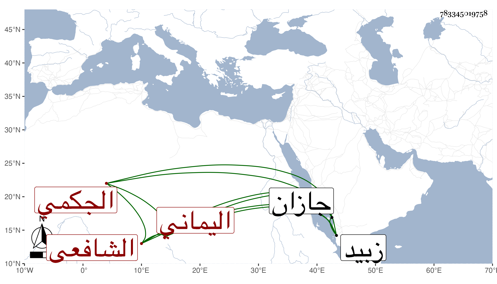

0902Sakhawi.DawLamic.ITO20230111-ara1.EIS1600.783345019758
Biography ID: 783345019758
1232
صديق بن محمد الجكمي الهيسي بفتح الهاء ومهملة اليماني الشافعي ويعرف بالوزيفي بضم أوله ثم معجمة وفاء مصغر . ولد بالهبيرة قرية من رساع بالقرب من جازان سنة بضع وثلاثين ، وأخذ في الفقه عن عمر الفتي وعبد الرحمن ابن الطيب وغيرهما ، وفي الحديث عن الفقيه يحيى العامري الآتي ، وتميز في الحديث وشارك في الفضائل فقها وأصولا ونحوا وقطن زبيد وهو الآن حي ، وانتفع الناس به ومنهم الفقيه صديق بن موسى الآتي وهو المخبر لي به .
